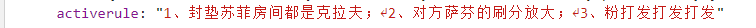
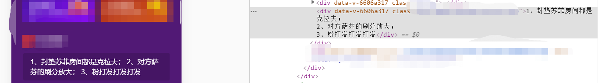
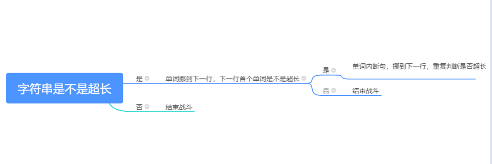
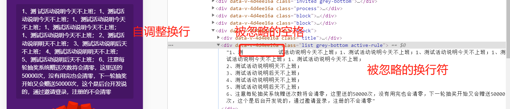
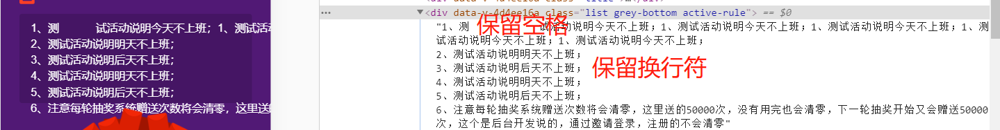
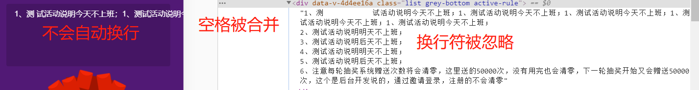
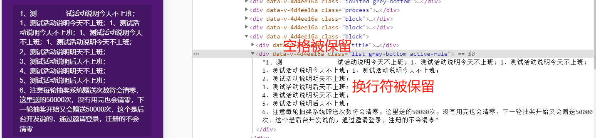
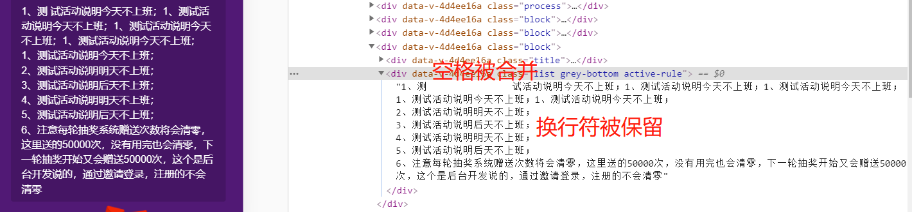

对于CSS的white-space属性，我想大部分人应该和我差不多，最常用的就是nowrap属性，最多用来做超长省略号显示的时候会用到【hiahiahia~】
起因是这样的：产品doggie策划了一个元旦活动，活动主页最下边需要显示配置的活动规则，注意，是配置的活动规则，所以，免不了运营小妹要在后台配置一个活动规则，肯定不指望她们能配置html文本的呀，对吧，于是她们配置的是这样的：
1、封垫苏菲房间都是克拉夫；
2、对方萨芬的刷分放大；
3、粉打发打发打发这样色的，于是，取数据的时候，那隐藏的换行符免不了就被带走了~走了~了，它就变成了一个真正的，换行符。就像word文档里面看见的那样

于是，页面呈现与DOM结构就变成了这样

显然，这不是我们真实想要它呈现的效果，我们当然是想它能聪明的在该换行的时候换行呀，对吧，那么问题来了，为什么，它没有换行呢？
阿望脑袋里能记下来的换行符一共有4种
当然，除了这几种，不同的语言可能会有它们自己的换行符，比如C++的endl，VB的空格+下划线
百度百科显示，word换行符是一种换行符号，它的作用是换行显示，但是它不是真正的段落标记，它的换行不是真正意义上的重起一段，因此被换行符分割的文字其实仍然还是一个段落中的，word中基于段落的所有操作都是不会识别换行符为段落结尾的，再加上在HTML中，只能识别br标签来做基本的文本换行，所以，这也就是文章开头说的，为什么word软回车换行符不能在HTML中正确回车显示了。
在HTML中，换行可以有以下几种办法
块级元素包裹
这个就不多做解释了，块级元素最基本的定义就是一般都从新行开始，相邻的块级元素将会在不同行显示，默认了它的换行行为
br 标签
br 是HTML中默认的、唯一的可识别的换行元素，在要换行的地方加进去就行，它是一个自闭合标签
pre 标签
来，解释一下上面才说了br 是HTML中默认的、唯一的可识别的换行元素，怎么突然有冒了个pre标签出来！
pre 元素可定义预格式化的文本，被包围在 pre 元素中的文本通常会保留空格和换行符，而文本也会呈现为等宽字体，所以，并不是因为它被识别成了换行元素才导致换行，而是因为，它保留了文本节点最原始的格式，你给我什么，我还你什么，而不是像其他的元素，你给我充满换行符合空格的文本，我给你被我压缩压缩再压缩的瘦身版文本
友情提示：它不仅可以保留换行格式，还可以保留你的多个空格噢，因为pre元素默认带有样式 white-space: pre;
举个栗子
<pre>
1、封垫苏菲房间都 是克拉夫；
2、对方萨芬的刷分放大；
3、粉打发打发打发
</pre>
// 显示
1、封垫苏菲房间都 是克拉夫；
2、对方萨芬的刷分放大；
3、粉打发打发打发
<div>
1、封垫苏菲房间都 是克拉夫；
2、对方萨芬的刷分放大；
3、粉打发打发打发
</div>
// 显示
1、封垫苏菲房间都 是克拉夫； 2、对方萨芬的刷分放大； 3、粉打发打发打发鉴于对pre标签的无知，在阿望还在做JSP的时候，遇到这种换行的需求通常都是正则表达式将换行符转换成br标签，然后通过HTML（vue的v-html）渲染成换行的DOM节点，相信也是大多数人的第一选择
'我的字符串1\r\n\r\n\r\n\r\n我的字符串2\r\n111'.replace(/\r\n/g, '<br />')现在想来，当初那些前辈们教下来的也是这个办法，估计，他们也没想到，一行CSS代码就能解决吧。。。
我们假设有个超长的文本节点："哈哈哈，congratulations"，我们假设有个容器长度只能装得下"哈哈哈，con"
word-break 属性规定自动换行的处理方法，可以让浏览器实现在任意位置的换行，它是CSS3推出的新属性（有兼容性问题），用来标明怎么样进行单词内的断句
什么叫单词内的断句呢？简单点来说，就是当文本节点"哈哈哈，congratulations"在容器中显示成了"哈哈哈，con[假设这里换了行]gratulations"的时候，就产生了单词内断句。浏览器默认的时候，"哈哈哈，congratulations"在容器中会显示成"哈哈哈，[假设这里换了行]congratulations"，即：如果有一个单词很长，导致一行中剩下的空间已经放不下它时，则浏览器会把这个单词挪到下一行去
word-break一共有三个属性值
normal 浏览器默认的换行规则
"哈哈哈，congratulations"在容器中会显示成"哈哈哈，[假设这里换了行]congratulations"
break-all 允许在单词内换行（单词是指non-CJK (CJK 指中文/日文/韩文) 文本）
"哈哈哈，congratulations"在容器中会显示成"哈哈哈，con[假设这里换了行]gratulations"
keep-all 只能在半角空格或连字符处换行
CJK 文本不断行， Non-CJK 文本表现同 normal
word-wrap 属性允许长单词或 URL 地址换行到下一行
word-break一共有两个属性值
normal 只在允许的断字点换行（浏览器保持默认处理）
break-word 在长单词或 URL 地址内部进行换行
那么它与word-break的区别是什么呢？
首先看我们的前提条件：有个超长的文本节点："哈哈哈，congratulations"，我们假设有个容器长度只能装得下"哈哈哈，con"，那么意味着，不添加word-break与word-wrap属性的时候，该文本节点在容器内显示为"哈哈哈，[假设这里换了行]congratulations"，且单词congratulations肯定是冲出了容器边界的，超级难看。这个时候word-wrap就能派上用场了，给这段文字加上word-wrap: break-word之后，文本节点就会显示成"哈哈哈，[假设这里换了行]congratula[假设这里换了行]tions"，这样，为了防止长单词溢出，就在它的内部断句了
那既然有word-wrap，又为什么要有word-break属性呢？简单来说，当设置word-break:break-all; word-wrap:break-word，我们的超长文本"哈哈哈，congratulations"就会显示成"哈哈哈，con[假设这里换了行]gratulatio[假设这里换了行]ns"，它的用处就是：节省空间！是的，你没有看错！
word-wrap 是用来决定允不允许单词内断句的，如果不允许的话长单词就会溢出。最重要的一点是它还是会首先尝试挪到下一行，看看下一行的宽度够不够，不够的话就进行单词内的断句

word-break:break-all则更粗暴，直接进行单词内的断句
white-space 属性设置如何处理元素内的空白，这个属性声明建立布局过程中如何处理元素中的空白符，实际上会对列表溢出换行和文字溢出进行处理
空白符
空白符是指在屏幕不会显示出来的字符（如空格，制表符tab，回车换行等），HTML默认已经把所有空白符合并成一个空格
white-space一共有五个属性值
normal 默认，空白符会被浏览器忽略
多个空格合并成1个空格，换行符被忽略，在容器宽度内自调整换行

pre 空白会被浏览器保留，其行为方式类似 HTML 中的 pre 标签
多个空格被保留，换行符被保留，不会在容器宽度内自调整换行，直到遇到 br 标签为止

nowrap 文本不会换行，文本会在在同一行上继续，直到遇到 br 标签为止
多个空格合并成1个空格，换行符被忽略，不会在容器宽度内自调整换行，这是它与默认行为不一样的地方

pre-wrap 保留空白符序列，但是正常地进行换行
多个空格被保留，换行符被保留，在容器宽度内自调整换行

pre-line 合并空白符序列，但是保留换行符
多个空格合并成1个空格，换行符被保留，在容器宽度内自调整换行

inherit 规定应该从父元素继承 white-space 属性的值
以上，可根据实际情况选择自己想要的属性值
另：若换行处想添加连字符，将congratulations换行显示为con-gratulatio-ns的话，可使用属性hyphens：auto;在适当的位置自动插入连字符换行